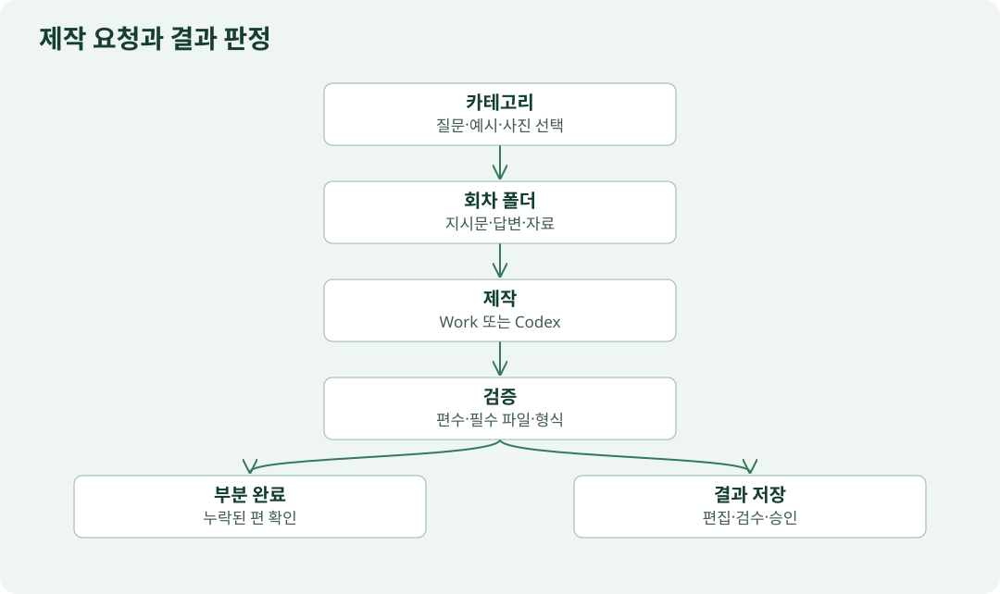

BLOG LAB STUDIO · 개발 진행 중01. 프로젝트 기획
한 편을 만들 때마다 다시 준비하던 자료
여행기 한 편을 시작할 때 Excel 질문지, 사진 순서, 프롬프트, 썸네일 예시를 다시 모았다. 연재가 여러 편으로 나뉘면 어느 원고와 사진이 같은 편인지도 사람이 맞춰야 했다.
제작 단위를 ‘작업 → 회차 → 편’으로 나눴다. 카테고리를 고르면 그 글에 필요한 질문지와 예시를 모으고, 사용자는 방문 정보와 사진을 입력한다. 제작 이후에도 같은 작업에서 게시 상태와 사용한 음악을 찾을 수 있다.
국내여행·해외여행·맛집·클라이밍 네 카테고리를 운영한다. 다음 확장 목표는 사진과 영상의 순서, 확정한 원고를 네이버 클립 등 숏폼 편집에 재사용하는 것이다. 자막·숏폼 자동 편집은 기획 단계다.

제작 요청과 결과 판정